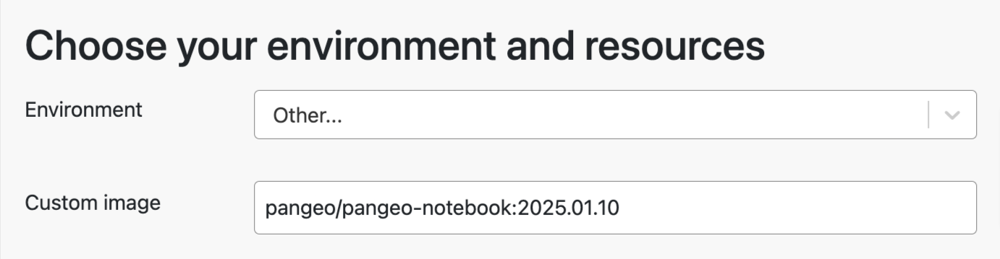
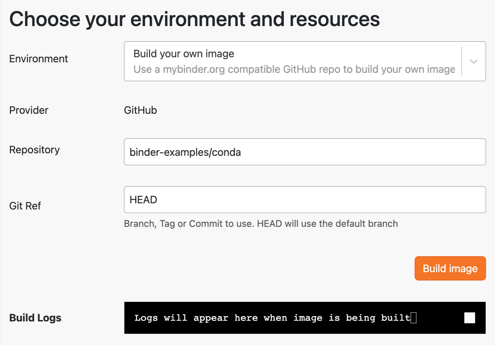
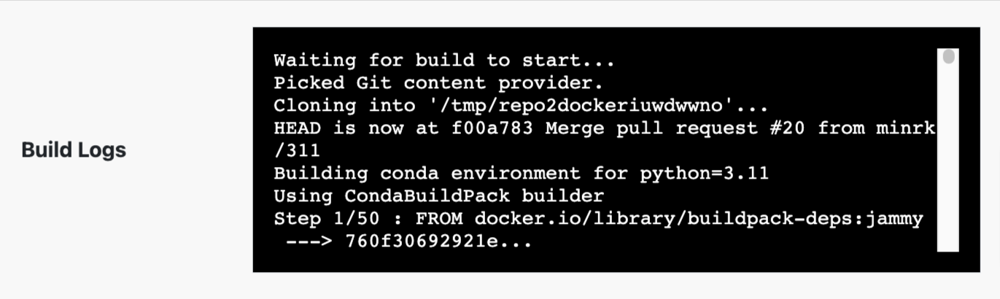
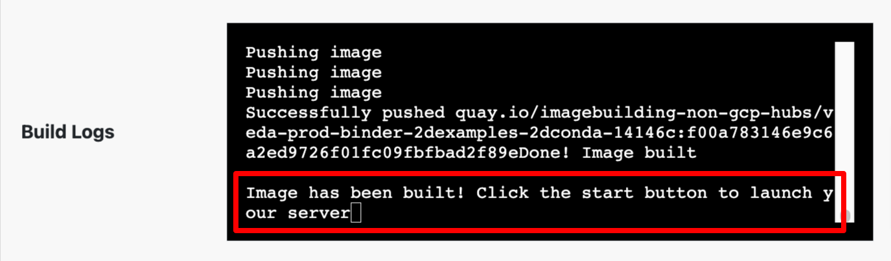

How to use a custom environment in the VEDA JupyterHub
The VEDA JupyterHub lists a few pre-configured environments (collections of Python or R libraries and/or other software) as Server Options intended to cover most common geospatial data science needs. These are pre-built Docker images ready for users to launch.
If you need a different configuration, there are two options for launching a custom environment:
- Use some other pre-built, public Docker image (see Environment: Other)
- Build your own Docker image (see Environment: Build your own image)
Each option is covered in the following sections.
Environment: Other
If you are aware of an existing pre-built, publicly accessible Docker image that meets your needs, on the Server Options page, open the Environment drop-down list, choose Other…, and specify the public identifier of the image in the Custom image field.
For example, if a Modified Pangeo Notebook environment were not already one of the pre-built environments listed, you could use the standard, publicly available Pangeo Notebook image yourself, like so:

At a minimum, the Custom image field must include both a name and a tag in the form NAME:TAG. There is no assumption that a name without a tag implies the latest tag, so a tag must be supplied.
When the hostname of the image registry is not specified, it defaults to docker.io, the canonical hostname of the official Docker registry. Therefore, the following custom image identifiers are equivalent:
pangeo/pangeo-notebook:2025.01.10(registry hostname is implicitlydocker.io)docker.io/pangeo/pangeo-notebook:2025.01.10
If you wish to use an image hosted in a registry other than docker.io, the custom image identifier must also include the registry hostname (in addition to a name and a tag). For example, images hosted in the GitHub Container Registry use the hostname ghcr.io, such as this “Tidyverse based R image with Python”: ghcr.io/nmfs-opensci/container-images/py-rocket-base:4.4-3.10
If you specify latest for the image tag, keep in mind that the image tagged latest may change over time, always referring to the latest published version. If you wish to “pin” the image each time you launch an environment, then use a specific tag, as shown in the examples above, to ensure you’re launching an environment from the same image version each time.
Once you have specified your custom image, choose your desired Resource Allocation and press the Start button at the bottom of the form to launch your environment.
Environment: Build your own image
When you wish to use a custom environment, but are not aware of a publicly available Docker image that suits your needs, the Environment option Build your own image provides a relatively easy and convenient means for building your desired image, without requiring knowledge of Docker.
This option leverages the repo2docker tool to handle the grunt work of building a custom Docker image for you, by allowing you to fully describe your desired image via files in a public code repository.
Currently, the VEDA JupyterHub supports only GitHub as a repository provider for use with repo2docker.
Describing Your Image
The beauty of repo2docker is that it will use the contents of a public code repository (repo) to build a Docker image, doing all of the heavy lifting for you. You do not need to know how to write a Dockerfile because it generates one for you. Hence the name repo2docker.
In brief, repo2docker allows you to describe the following within a public GitHub repository (for full details, see Configuring your repository):
- A list of packages and runtimes to install (in addition to a base set of packages), specified via various files, such as the following (among others):
environment.yml: for any kind of conda package (and/orpippackage), including specific versions of programming languagesinstall.R: for R packages (if not usingenvironment.yml)requirements.txt: forpippackages (if not usingenvironment.yml)runtime.txt: for specifying versions of runtimes (such as Python or R) when other files (such asinstall.Randrequirements.txt) do not support doing soapt.txt: for specifying Ubuntu packages installed viaapt
- Optionally, a post-build script to run after all packages and runtimes are installed (this must be named postBuild)
- Optionally, a pre-session script to run each time you launch a new environment with your image (this must be named start)
Such files from your repository are used to construct a Dockerfile file on your behalf, so you don’t have to write one yourself, unless you really want to. If your repo contains a Dockerfile, repo2docker will ignore all other files in your repo that it would otherwise use to generate a Dockerfile, and simply use the Dockerfile from your repo directly.
For complete details on what repo2docker supports, see the following:
- Configuring your repository
- Where to put configuration files
- Architecture
- Frequently Asked Questions (FAQ)
- Example repositories
Once you have described your image in your repository, you are ready to build it, as described in the next section.
Building Your Image
When you choose Build your own image from the Environment list, you must specify values for 2 other fields — Repository and Git Ref — which indicate which repository to use and which commit within the repository to use (valid values for these fields are explained below the screenshot):

In the Repository field, you must specify a public GitHub repository in either of the following forms:
- Full URL (e.g., https://github.com/binder-examples/conda)
- Namespace/name pair (e.g.,
binder-examples/conda), where a namespace is either a GitHub username or organization (binder-examplesin this example).
In the Git Ref field, if you want repo2docker to use the most recent changes (latest commit) on the default branch of the repository (typically main), then use the default value HEAD to indicate the latest commit. Alternatively, you may specify a branch name, a tag, or a specific commit identifier to indicate a different commit for repo2docker to use.
When specifying a commit identifier such as HEAD or a branch name, such a commit identifier may reference different commits over time because it represents a logical commit, not a specific commit. In the case of HEAD or a branch name, it represents the latest commit on the specified branch (whichever specific commit that happens to be at the current moment).
This means that each time you choose to build your image using such a logical value for Git Ref, the system will rebuild your image if the logical reference points to a different commit than it did the last time you built your image. This is useful for making a series of alternating commits and builds during “development” of your image.
Once you’ve specified both Repository and Git Ref, click the Build image button to trigger repo2docker to build your image (which may take several minutes), and you should see log messages appear below the Build image button, similar to the following:

Once your image is built, you should see something similar to this:

At this point, your image is ready for use. As with all other environment options, select your desired Resource Allocation and click the Start button to launch a Docker container using your custom image.
When your server is ready, the conda environment named “notebook” will be activated for you. Even if your repository contains an environment.yml file with a name entry, the name specified within your file will be ignored. While all dependencies in your file will be installed, the name of the environment will always be “notebook.”